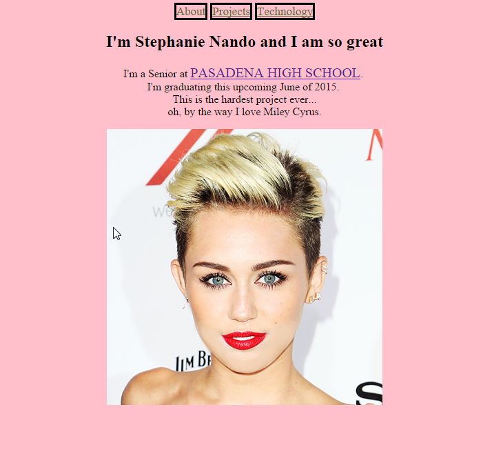
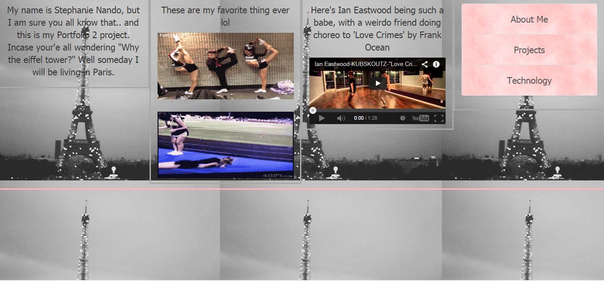
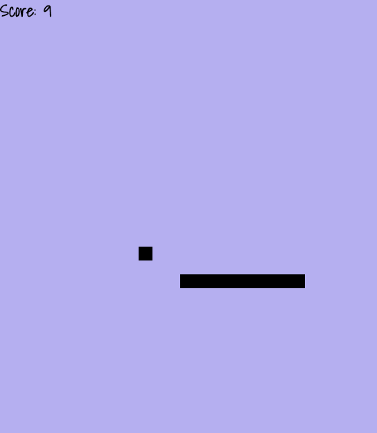

This is my new Project's page.
Portfolio 1
The first project we did was a basic website we can use to show off
our accomplishments from the App Academy to friends, colleges or future employers. I built the website using HTML and CSS.

Portfolio 2
This second project is an advanced, responsive website which you can
use to show off your accomplishments from the App Academy to friends, colleges or future employers. For
this, I used HTML, CSS, and Bootstrap

Snake
This third project, is a super duper difficult game.. not only to play, but to make(kinda)
For this project, we used Javascript.

Wannabe Mario
This fourth project was the hardest and most stressful of all the projects we've done in this class.
We used both Melon JS and Tiled.